Новый процесс во внутренней системе банка для операторов колл-центра и отделений.
Операторы оформляют кредиты во внутренней системе банка, работая с ней по 8–12 часов в смену. Чтобы получить кредит с подтверждением дохода, клиенту приходилось приносить справки в офис. Задача — добавить подтверждение дохода через Госуслуги прямо во время звонка или визита и заодно навести порядок в загрузке справок.
При разборе вкладки «Документы» нашлось четыре проблемы. Справки о доходе лежали в одном списке со всеми документами. Кнопки «+ Следующая страница» и «+ Единый документ» не понимали даже заказчики. Пустое поле «Тип документа» под загрузкой выглядело как незаполненное. А кнопка «Подтвердить доход» на самом деле отправляла заявку клиенту в мобильный банк, и новое действие получило бы то же название.
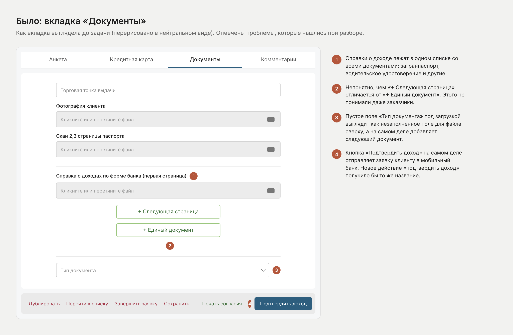
Процесс новый для системы и зависит от внешних сервисов. Клиент даёт согласие на Госуслугах по ссылке из смс, банк запрашивает данные о доходе, ответ приходит до 10 минут, потом предложение пересчитывается. На каждом шаге возможны ошибки. Требования менялись по ходу, а у бизнеса и аналитики были разные взгляды на кнопки, недоступные действия и уведомления.
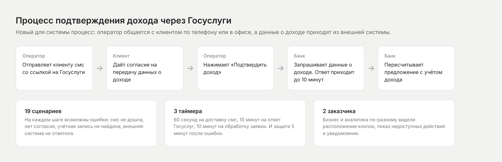
Собрала требования, матрицу проверок и список ошибок в одну таблицу из 19 сценариев. Оказалось, что по внешнему виду они сводятся к 13 вариантам блока: многие ситуации отличаются только сообщением. Для разработки это одна понятная карта вместо нескольких документов.
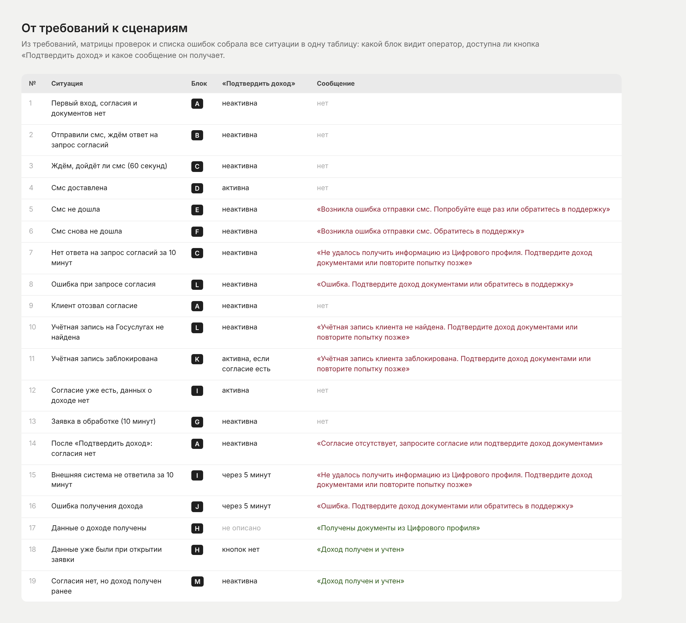
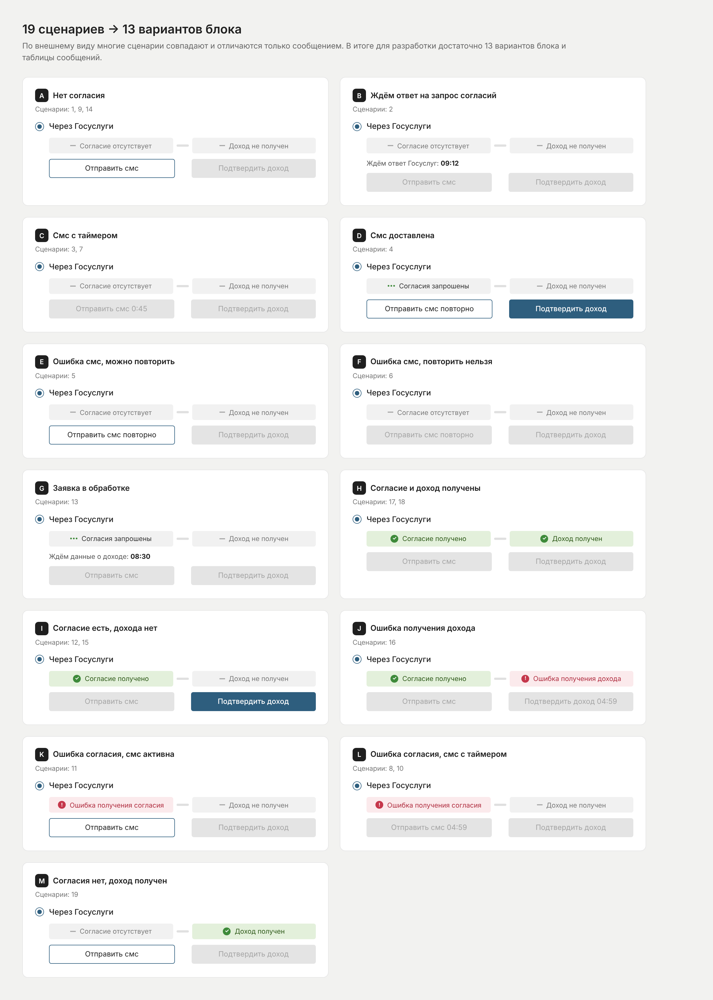
Статус прошёл путь от одного баджа до двух шагов — «согласие» и «доход». Каждую следующую версию подсказывало то, с чем элемент путали на предыдущей: пустой кружок принимали за радиобаттон, пунктир — за зону загрузки, яркую зелёную заливку — за кнопку. В финале статус светлый, без рамки и ниже кнопок, а сплошная заливка осталась только у главного действия.
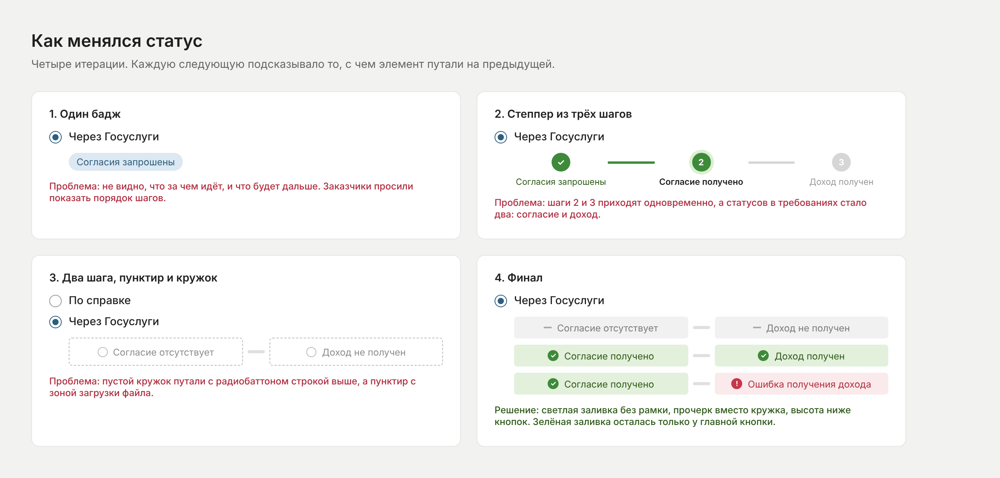
В наброске заказчиков у каждого способа были и радиобаттон, и стрелка раскрытия, оба блока были открыты одновременно. Убрала двойное управление, а затем предложила переключатель: выбор в одну строку, переключатель, шаг «Согласие» и кнопка выровнены по одной ширине.
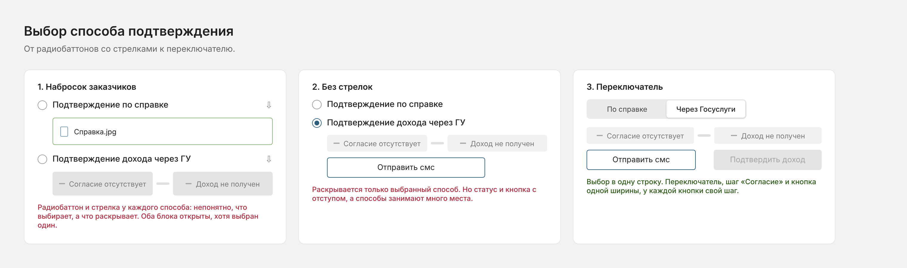
Вместо того чтобы спорить о каждой кнопке, договорились о двух правилах. Действие внутри раздела — в блоке раздела, действие по всей заявке — в нижнем баре. Если ждём, когда кнопку можно будет нажать, — таймер на кнопке, если ждём ответ системы — таймер текстом под статусом. Правила устроили и бизнес, и аналитику и работают для любой новой кнопки. Заодно они развели два действия с одинаковым названием: отправку заявки в мобильный банк предложила назвать по действию.
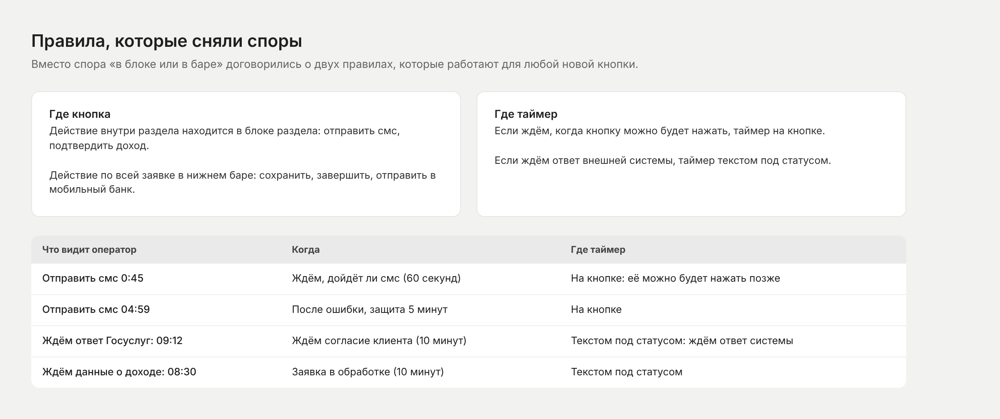
В разделе подтверждения дохода остались только справки о доходе, остальные документы переехали в отдельный блок ниже. Вместо двух непонятных кнопок предложила одну зону загрузки: многостраничный PDF — это весь документ, фото — это страница. Тип справки выбирается над загрузкой, следующая справка добавляется ссылкой.
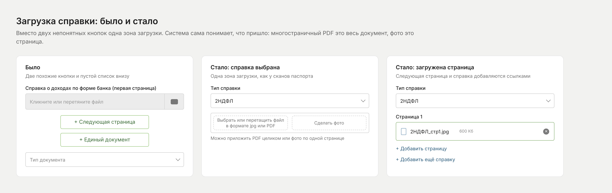
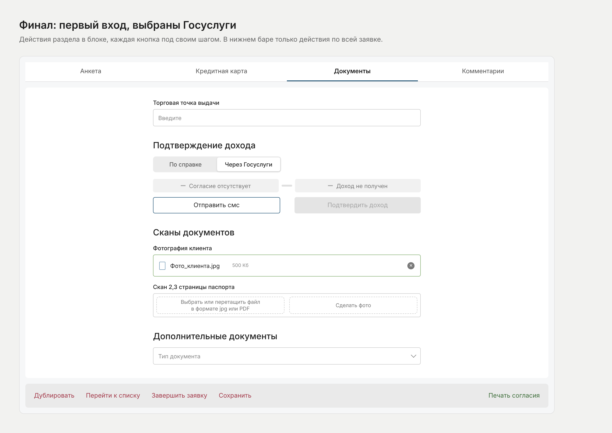
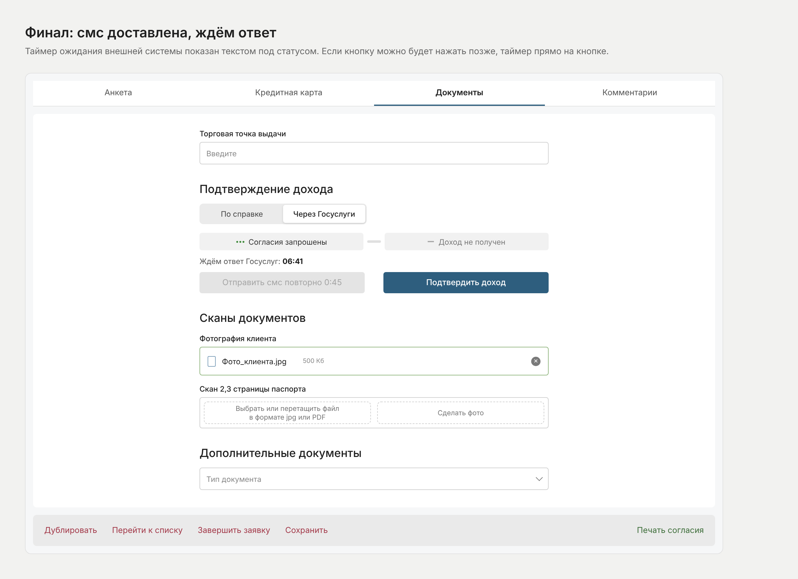
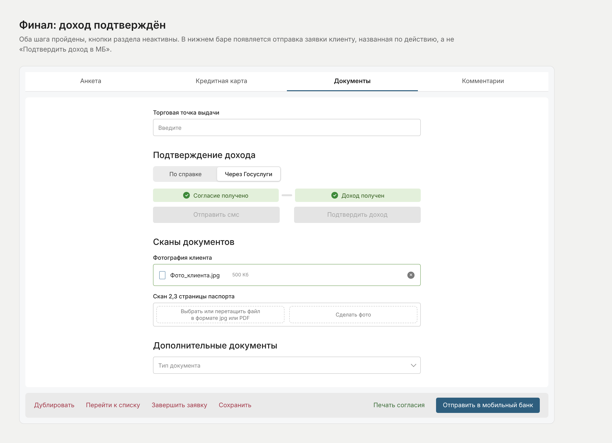
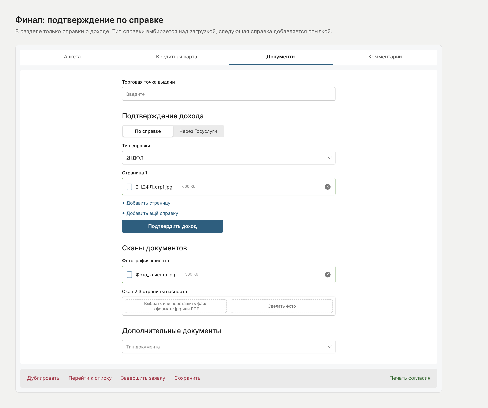
Для экранов собрала в Figma компоненты с вариантами и свойствами: статус с четырьмя состояниями, ряд статуса со всеми сочетаниями из требований, сегмент переключателя, кнопки с таймером. UI kit проекта тоже делала сама: поля ввода со всеми состояниями, кнопки, переключатели, чекбоксы, радиобаттоны, свитчи, слайдер, таблицы, раскрывающиеся панели. Компоненты переданы в разработку. Новые состояния собираются из готовых компонентов за минуты, а если названия статусов поменяются, их достаточно переписать в свойстве.
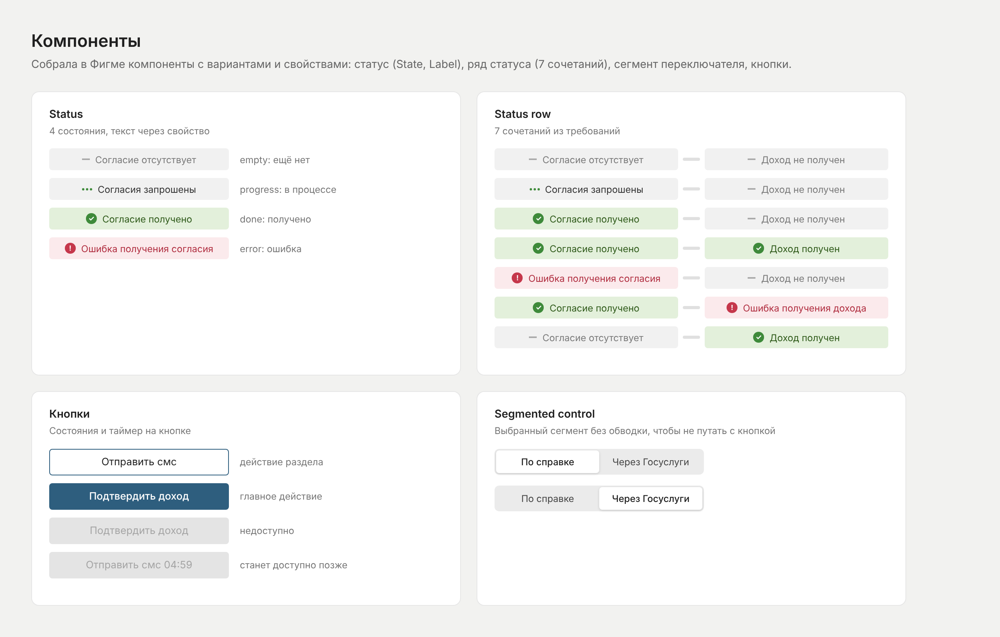
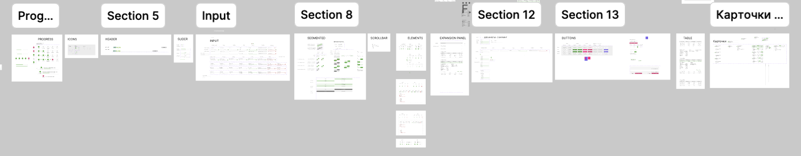
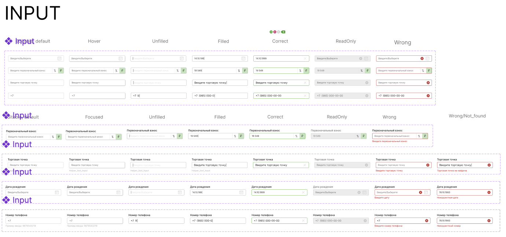
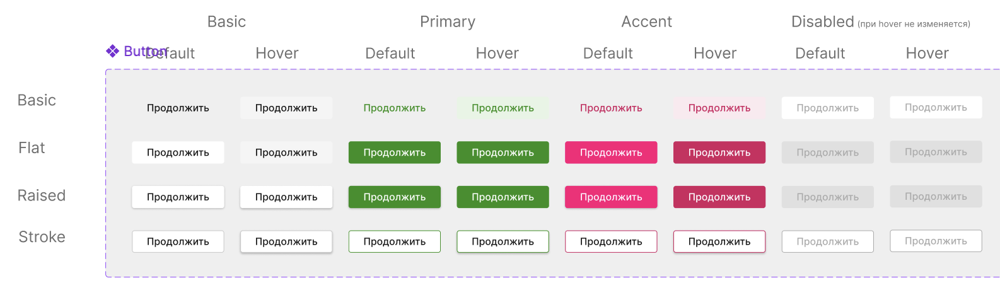
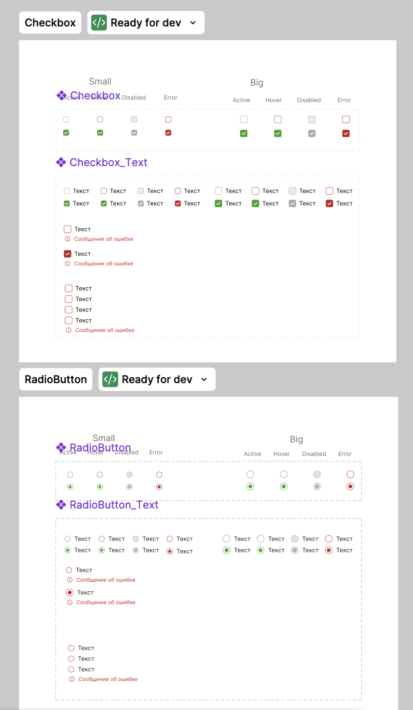
Функция в разработке. Когда она запустится, добавлю данные о том, как изменилось время подтверждения дохода.
Во внутреннем продукте интерфейс оценивают не за красоту, а за то, сколько раз оператор ошибётся за 12 часов смены. Самым полезным оказалось не нарисовать экран, а договориться о правилах, по которым экраны рисуются.